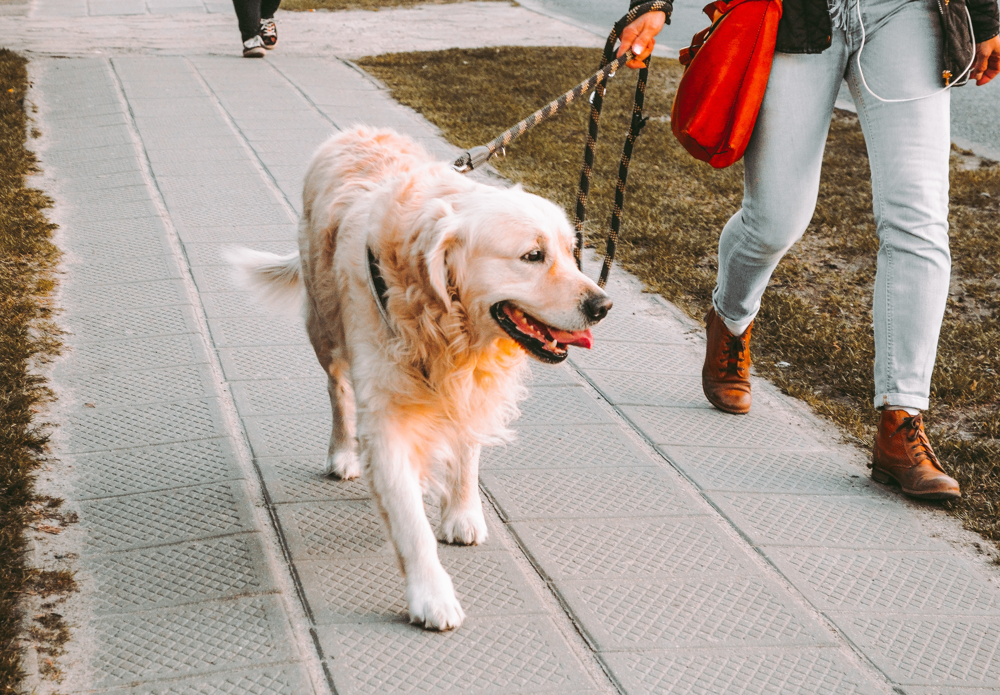

Our regular walking schedule
Monday's & Wednesday's
6.30am - 7.30am
6.30pm - 7.30pm
Route 1
Meeting point: Memorial Center
Walking through the village up to the woodlands and back.
Tuesday's & Thursday's
6.00am - 7.00am
6.00pm - 7.00pm
Route 2
Meeting point: Village club
A gentle walk around the village, ideal for smaller dogs/puppies and senior dogs
Friday's
6.30am - 7.30am
7.30pm - 8.30pm
Route 3
Meeting point: St Mary's church
Walking through the village and out into the fields and back.
Saturday's & Sunday's

11.00am - 12.30pm
5.30pm - 7.00pm
Route 4
Meeting point: Visitor Centre
An energetic walk through the country park
This route has some unsteady terrain so is not suited to our elderly members (human & canine) unless very fit!